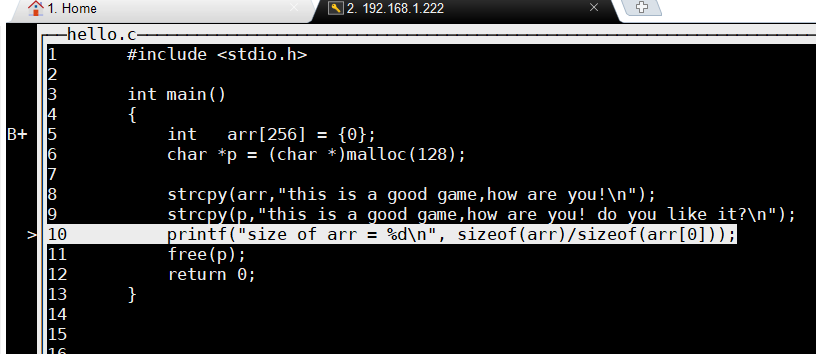

(gdb)lLine number 2 outof range./path/code/serial.c has 1 lines(gdb)l 11 ^M#include<sys/types.h>^M$include<sys/stat.h>^M//#include<sys/time.h>^M//#include<sys/ioctrl.h>^M#include<unistd.h>^M<termios.h>^M#...查看出问题所在，在
gdb下面输入l命令时，报错Line number 2 outof range ./path/code/serial.c has 1 lines，但是输入l 1或者l 2时，有杂乱的输出。显然是代码换行出了问题
于是用vim 打开，
set ff=unix，然后把^M替换成\rxxxxxxxxxx^M在 windows的 vim 上没有生成成功，但是在 linux 下成功了就是按 ctrl-v然后回车，替换命令为:%s/^M/\r/g只是不知为什么
dos2unix工具为什么在这时候失灵
xxxxxxxxxx在 Makefile 中加入参数 -g3 和 --gdwarf-2 ，这样就可以在 gdb 中打印宏了
xxxxxxxxxxchild process 22295 In: main Line: 10 PC: 0x400692(gdb) x/16x p0x602010: 0x73696874 0x20736920 0x6f672061 0x6720646f0x602020: 0x2c656d61 0x20776f68 0x20657261 0x21756f790x602030: 0x206f6420 0x20756f79 0x656b696c 0x3f7469200x602040: 0x0000000a 0x00000000 0x00000000 0x00000000(gdb) x/16c p0x602010: 116 't' 104 'h' 105 'i' 115 's' 32 ' ' 105 'i' 115 's' 32 ' '0x602018: 97 'a' 32 ' ' 103 'g' 111 'o' 111 'o' 100 'd' 32 ' ' 103 'g'(gdb) x/16d p0x602010: 116 104 105 115 32 105 115 320x602018: 97 32 103 111 111 100 32 103(gdb) x/16i p 0x602010: je 0x60207a 0x602012: imul $0x61207369,0x20(%rbx),%esi 0x602019: and %ah,0x6f(%rdi) 0x60201c: outsl %ds:(%rsi),(%dx) 0x60201d: and %ah,%fs:0x61(%rdi) 0x602021: insl (%dx),%es:(%rdi) 0x602022: gs 0x602023: sub $0x68,%al 0x602025: outsl %ds:(%rsi),(%dx) 0x602026: ja 0x602048 0x602028: (bad) 0x602029: jb 0x602090 0x60202b: and %bh,0x6f(%rcx) 0x60202e: jne 0x602051 0x602030: and %ah,0x20(%rdi,%rbp,2) 0x602034: jns 0x6020a5(gdb) x/16h p0x602010: 0x6874 0x7369 0x6920 0x2073 0x2061 0x6f67 0x646f 0x67200x602020: 0x6d61 0x2c65 0x6f68 0x2077 0x7261 0x2065 0x6f79 0x2175(gdb) x/16xh p0x602010: 0x6874 0x7369 0x6920 0x2073 0x2061 0x6f67 0x646f 0x67200x602020: 0x6d61 0x2c65 0x6f68 0x2077 0x7261 0x2065 0x6f79 0x2175(gdb)layout：用于分割窗口，可以一边查看代码，一边测试。主要有以下几种用法：layout：用于分割窗口，可以一边查看代码，一边测试。主要有以下几种用法：layout src：显示源代码窗口layout asm：显示汇编窗口layout regs：显示源代码/汇编和寄存器窗口layout split：显示源代码和汇编窗口layout next：显示下一个layoutlayout prev：显示上一个layoutCtrl + L：刷新窗口Ctrl + x，再按1：单窗口模式，显示一个窗口Ctrl + x，再按2：双窗口模式，显示两个窗口Ctrl + x，再按a：回到传统模式，即退出layout，回到执行layout之前的调试窗口。set print element 1000